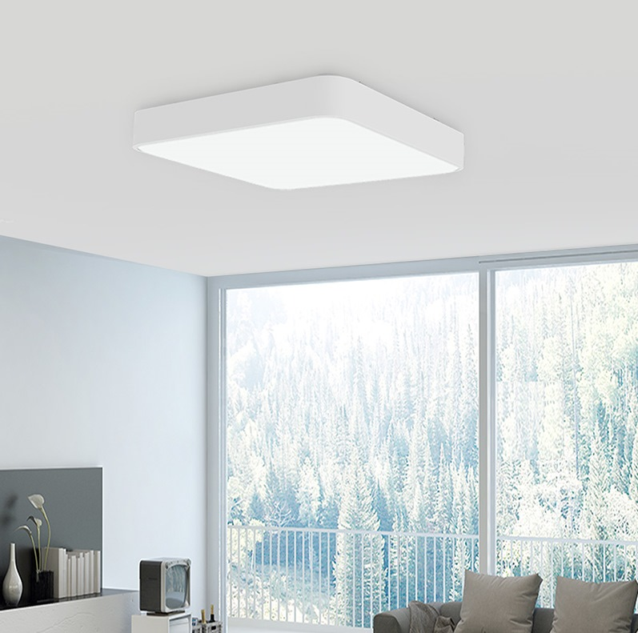
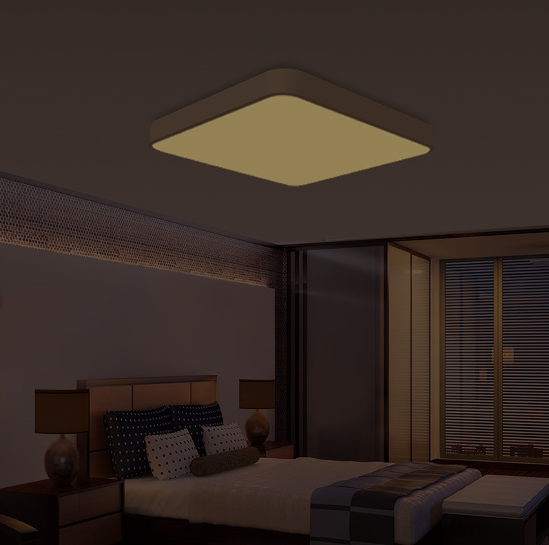
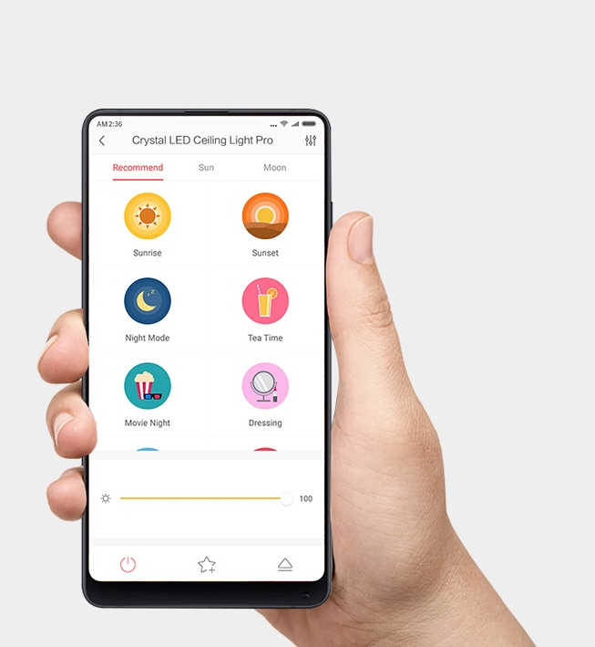
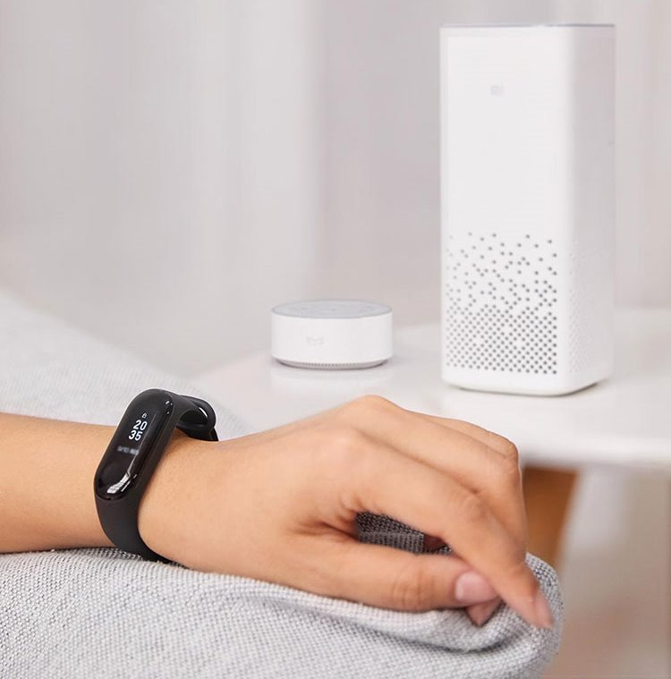
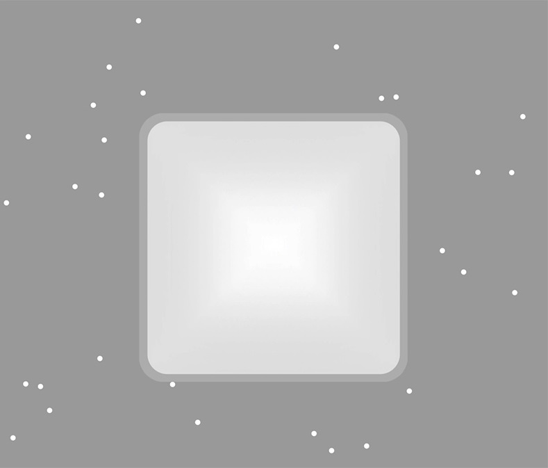

<div class="row nox-plus">
    <div class="col-xs-12 col-sm-12 col-md-10 col-md-offset-1 col-lg-8 col-lg-offset-2 content">

        <section class="row nox-plus_content_1">
            <div class="col-xs-12 col-sm-6 col-md-6 col-lg-6">
                <div class="text">
                    <h1>Yeelight Crystal Ceiling Light Plus</h1>
                    <h2>Интелектуальное освещение с&nbsp;натуральным светом</h2>
                    <p>Квадратная форма 500×500 mm | Высокая светоотдача | Защита от насекомых | Умное
                        управление смартфоном</p>
                </div>
            </div>
            <div class="col-xs-12 col-sm-6 col-md-6 col-lg-6">
                
            </div>
        </section>

        <section class="row nox-plus_content_2">
            <div class="col-xs-12 col-sm-12 col-md-10 col-md-offset-1 col-lg-10 col-lg-offset-1">
                <div class="text align-center">
                    <h2>Равномерное и яркое освещение</h2>
                    <p>Crystal Plus с яркостью 2900 Лм обеспечивает равномерное и яркое освещение для вашего дома.
                        Светильник поддерживает цветовую температуру в диапазоне от 2700 до 6500 К, что позволяет
                        настраивать тон от четкого белого света до теплого желтого или любого другого в этом диапазоне.
                    </p>
                </div>
            </div>
        </section>

        <section class="row nox_content_4">
            <div class="col-xs-12 col-sm-12 col-md-12 col-lg-12 align-center">
                <div class="text">
                    <h2>Регулируемая яркость и цветовая температура</h2>
                    <p>Crystal Plus позволяет точно регулировать яркость вашей гостиной, чтобы обеспечить удобство для
                        различных случаев, таких как высокая яркость для работы и низкая яркость для расслабления.
                        Crystal Plus настраивает цветовую температуру под ваше настроение и времена года, обеспечивая
                        вам прохладное белое освещение летом и теплое желтое освещение зимой.</p>
                </div>
                <ul class="function">
                    <li>
                        <span class="icon inclamp"></span>
                        <p>2800K <br>Лампа накаливания</p>
                    </li>
                    <li>
                        <span class="icon sunriselight"></span>
                        <p>3400K <br>Солнце на восходе</p>
                    </li>
                    <li>
                        <span class="icon sunlight"></span>
                        <p>5500K <br>Дневной свет</p>
                    </li>
                    <li>
                        <span class="icon fluorlight"></span>
                        <p>6500K <br>Люминисцентный свет</p>
                    </li>
                </ul>
                
            </div>
        </section>

        <section class="row nox-plus_content_3">
            <div class="col-xs-12 col-sm-6 col-md-6 col-lg-6" style="padding: 0; font-size: 0;"></div>
            <div class="col-xs-12 col-sm-6 col-md-6 col-lg-6" style="padding: 0">
                <div class="text">
                    <h2>Высокая цветопередача для ярких цветов</h2>
                    <p>За счет 120 качественных светодиодиодов в светильнике, Crystal Plus достигает показателя
                        цветопередачи Ra95, отражая истинные цвета предметов в помещении. Crystal Plus поможет вам
                        видить мир таким какой он есть.</p>
                </div>
            </div>
        </section>

        <section class="row nox-plus_content_5">
            <div class="col-xs-12 col-sm-6 col-sm-push-6 col-md-push-6 col-md-6 col-lg-6 col-lg-push-6"
                style="padding: 0; font-size: 0;"></div>
            <div class="col-xs-12 col-sm-6 col-sm-pull-6 col-md-6 col-md-pull-6 col-lg-6 col-lg-pull-6"
                style="padding: 0">
                <div class="text">
                    <h2>Приятный лунный свет</h2>
                    <p>Тусклый и мягкий, как лунный свет, режим «Лунный свет» обеспечивает приятное освещение, которое
                        поможет вам видеть в темноте, не повреждая глаза и не будя других. Минимальная яркость Crystal
                        Plus может достигать 1 Лм яркости.</p>
                </div>
            </div>
        </section>

        <section class="row nox_content_5">
            <div class="col-xs-12 col-sm-12 col-md-10 col-md-offset-1 col-lg-10 col-lg-offset-1 align-center">
                <div class="text">
                    <h2>Различные режимы для разных случаев</h2>
                    <p>Crystal Plus имеет различные режимы на выбор, каждый из которых имеет уникальную настройку,
                        соответствующую вашему случаю. Доступ к режимам можно получить с помощью приложений Mi Home или
                        Yeelight.</p>
                </div>
            </div>
        </section>

        <section class="row nox_content_6 row-flex">
            <div class="col-xs-12 col-sm-4 col-md-4 col-lg-4 item_1 align-center">
                <div class="text">
                    <h2>Лунный режим</h2>
                    <p>Холодное и тусклое освещение, идеально подходит для просмотра фильмов.</p>
                </div>
            </div>
            <div class="col-xs-12 col-sm-4 col-md-4 col-lg-4 item_2 align-center">
                <div class="text">
                    <h2>Режим вечеринки</h2>
                    <p>Теплый и тусклый свет, идеально подходящий для романтического вечера.</p>
                </div>
            </div>
            <div class="col-xs-12 col-sm-4 col-md-4 col-lg-4 item_3 align-center">
                <div class="text">
                    <h2>Режим чтения</h2>
                    <p>Четкое яркое освещение, удобное для чтения.</p>
                </div>
            </div>
        </section>

        <section class="row nox_content_8">
            <div class="col-xs-12 col-sm-6 col-md-6 col-lg-6" style="padding: 0">
                <div class="text">
                    <h2>Несколько интеллектуальных элементов управления</h2>
                    <p>Crystal Plus поддерживает несколько вариантов интеллектуального управления. Помимо традиционного
                        настенного переключателя и пульта Bluetooth (опционально), с мобильными приложениями Yeelight
                        или Mi Home вы
                        можете легко настроить освещение в своей комнате. Синхронизируя ваш свет с помощью Google
                        Assistant или Amazon Alexa, вы можете реализовать голосовое управление яркостью и цветовой
                        температурой.</p>
                    <ul class="function">
                        <li>
                            <span class="icon appcontrol"></span>
                            <p>Приложение</p>
                        </li>
                        <li>
                            <span class="icon swichcontrol"></span>
                            <p>Выключатель</p>
                        </li>
                        <li>
                            <span class="icon remotecontrol"></span>
                            <p>Пульт (опция)</p>
                        </li>
                    </ul>
                </div>

            </div>
            <div class="col-xs-12 col-sm-6 col-md-6 col-lg-6" style="padding: 0; font-size: 0;"></div>
        </section>

        <section class="row nox-plus_content_3">
            <div class="col-xs-12 col-sm-6 col-md-6 col-lg-6" style="padding: 0; font-size: 0;"></div>
            <div class="col-xs-12 col-sm-6 col-md-6 col-lg-6" style="padding: 0">
                <div class="text">
                    <h2>Интеграция с системой умный дом</h2>
                    <p>Crystal Plus можно синхронизировать с различными интеллектуальными устройствами для совместной
                        работы для вашего удобства. Например, при синхронизации с Mi Band, Crystal Plus можно настроить
                        на автоматическое отключение, когда Mi Band обнаружит, что вы заснули.</p>
                </div>
            </div>
        </section>

        <section class="row nox-plus_content_7">
            <div class="col-xs-12 col-sm-6 col-sm-push-6 col-md-push-6 col-md-6 col-lg-6 col-lg-push-6"
                style="padding: 0; font-size: 0;"></div>
            <div class="col-xs-12 col-sm-6 col-sm-pull-6 col-md-6 col-md-pull-6 col-lg-6 col-lg-pull-6"
                style="padding: 0">
                <div class="text">
                    <h2>Защита от насекомых</h2>
                    <p>Антимоскитный дизайн Crystal Plus обеспечивает плотную герметизацию, а также предотвращает
                        попадание пыли и насекомых внутрь лампы. Благодаря этому во время уборки вы можете забыть о
                        светильнике.</p>
                </div>
            </div>
        </section>

        <section class="row nox-plus_content_6 row-flex">
            <div class="col-xs-12 col-sm-4 col-md-4 col-lg-4 item align-center">
                <div class="text">
                    <h2>Прочная и легкая рамка из аллюминия. Два вида исполнения</h2>
                </div>
                
            </div>
            <div class="col-xs-12 col-sm-4 col-md-4 col-lg-4 item align-center">
                <div class="text">
                    <h2>12 зажимов абажура обеспечивают полную герметичность</h2>
                </div>
                
            </div>
            <div class="col-xs-12 col-sm-4 col-md-4 col-lg-4 item align-center">
                <div class="text">
                    <h2>Удобный поворотный замок для открывания корпуса</h2>
                </div>
                
            </div>
        </section>

        <section class="row nox-plus_content_11">
            <div class="col-sm-12 col-md-12 col-lg-12">
                
                <table class="table">
                    <thead>
                        <tr>
                            <th colspan="2">Характеристики</th>
                        </tr>
                    </thead>
                    <tbody>
                        <tr>
                            <td>Модель</td>
                            <td>YLXD10YL</td>
                        </tr>
                        <tr>
                            <td>Цвет</td>
                            <td>Белый</td>
                        </tr>
                        <tr>
                            <td>Размеры</td>
                            <td>500x500x113mm</td>
                        </tr>
                        <tr>
                            <td>Световой поток</td>
                            <td>Регулируемый: 350lm-6500lm</td>
                        </tr>
                        <tr>
                            <td>Сеть</td>
                            <td>Wi-Fi IEEE 802.11 b/g/n 2.4GHz</td>
                        </tr>
                        <tr>
                            <td>Цветовая температура</td>
                            <td>Регулируемая: 2700K-6500K</td>
                        </tr>
                        <tr>
                            <td>CRI</td>
                            <td>>95</td>
                        </tr>
                        <tr>
                            <td>Мощность</td>
                            <td>45W</td>
                        </tr>
                        <tr>
                            <td>Поддерживаемые платформы</td>
                            <td>Android 4.4 и выше / IOS 8.0 и выше</td>
                        </tr>
                        <tr>
                            <td>Управление</td>
                            <td>Голосовое, пульт (опция), приложение</td>
                        </tr>
                    </tbody>
                </table>
            </div>
        </section>
    </div>
</div>